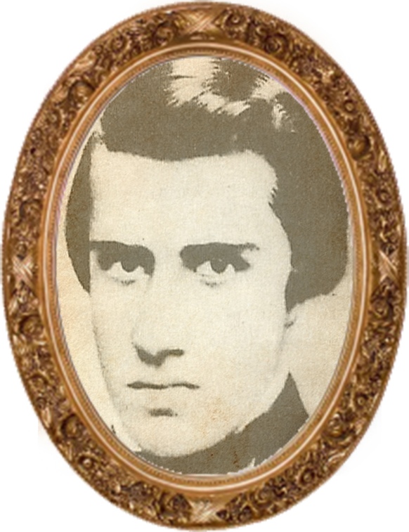
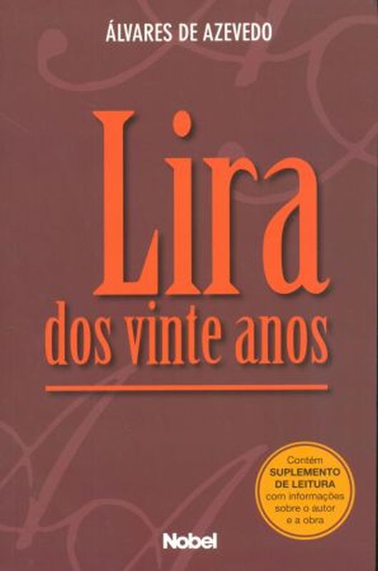
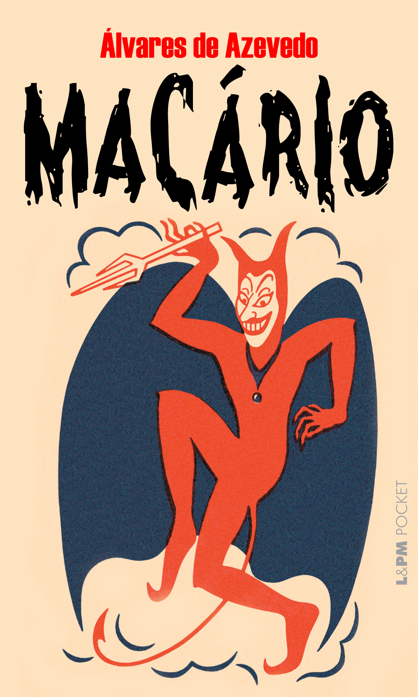
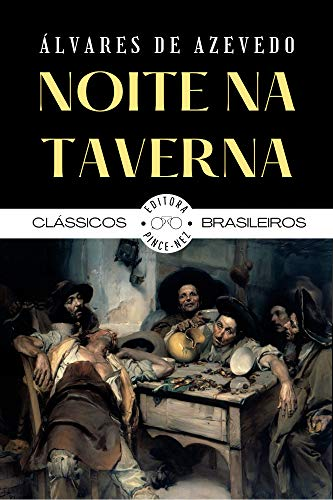

Manuel Antônio Álvares de Azevedo nasceu em São Paulo no dia 12 de setembro de 1831. Era filho do Doutor Inácio Manuel Alvares de Azevedo e de Dona Luísa Azevedo. Aos dois anos de idade, junto com sua família, muda-se para o Rio de Janeiro. Em 1836 morreu seu irmão mais novo, fato que o deixou bastante abalado. Foi aluno brilhante, estudou no colégio do professor Stoll quando era constantemente elogiado. Com nove anos já escrevia cartas em inglês para sua mãe. Em 1845 ingressou no Colégio Pedro II, onde fez o curso de humanidades. Em 1848, com 16 anos, Álvares de Azevedo voltou para São Paulo e iniciou o curso de Direito na Faculdade do Largo de São Francisco. Participou ativamente da vida literária e reunia-se com grupos boêmios. Nessa época, junto com Bernardo Guimarães, fundou a Sociedade de Ensaio Filosófico Paulistano. Traduziu obras de Byron, de Shakespeare, Alfred de Musset e outros. Álvares de Azevedo vivia em meio aos livros da faculdade e se dedicava a escrever suas poesias. Toda sua obra poética foi escrita durante os quatro anos que cursou a faculdade. O sentimento de solidão e tristeza refletidos em seus poemas era de fato a saudade da família que ficara no Rio de Janeiro.
Álvares de Azevedo

- Nascimento:12/09/1831
- Morte: 25/04/1852
- Ocupação: Escritor, Contista e Poeta
- Cidade: Nasceu em São Paulo, morreu em Rio de Janeiro
- Colégio: Colégio Stoll, Colégio Pedro II, Faculdade de Direito no Largo de São Francisco
- Afilhiados: Pai: Doutor Inácio Manuel Alvares de Azevedo, mãe: Dona Luísa Azevedo, irmão: Inácio Manoel
Biografia
Morte
Em 1852, Álvares de Azevedo adoeceu e abandonou a faculdade um ano antes de completar o curso de Direito. Vitimado por uma tuberculose e sofrendo com um tumor, Álvares de Azevedo foi operado, mas não resistiu. Álvares de Azevedo faleceu no dia 25 de abril de 1852 com apenas 20 anos de idade. Não concluiu os estudos nem viu sua obra reunida em livro. Sua poesia Se Eu Morresse Amanhã! escrita alguns dias antes de sua morte, foi lida, no dia de seu enterro, pelo escritor Joaquim Manuel de Macedo.
Obras

Lira dos Vinte Anos, poesia (1853)

Macário, obra dramática, (1850)

A Noite na Taverna, prosa (1855)
O Conde Lopo, poesia (1866)